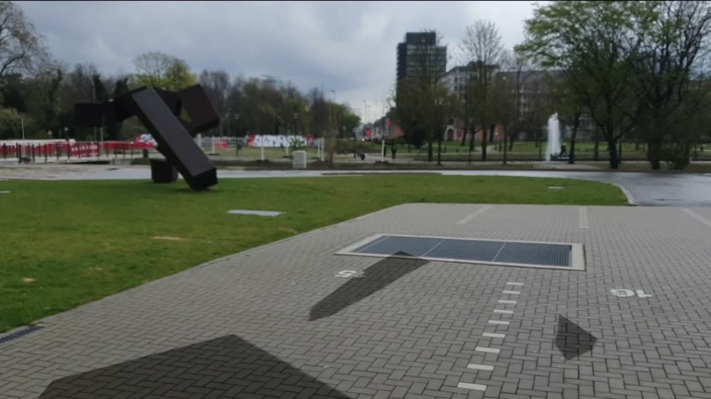
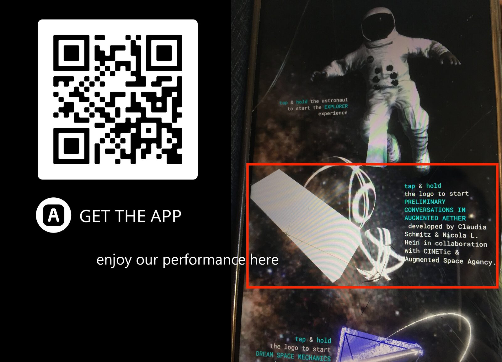
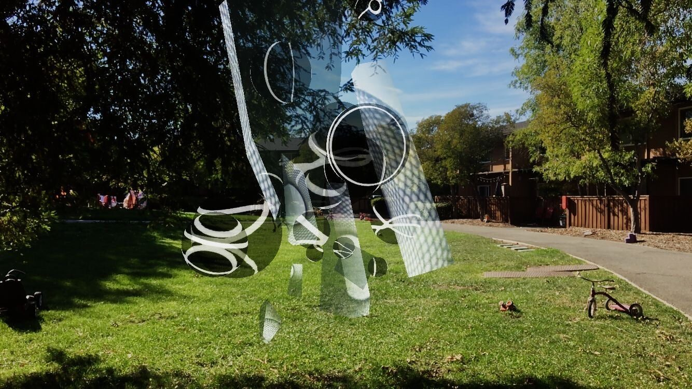
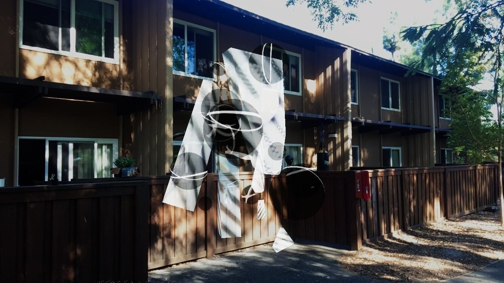
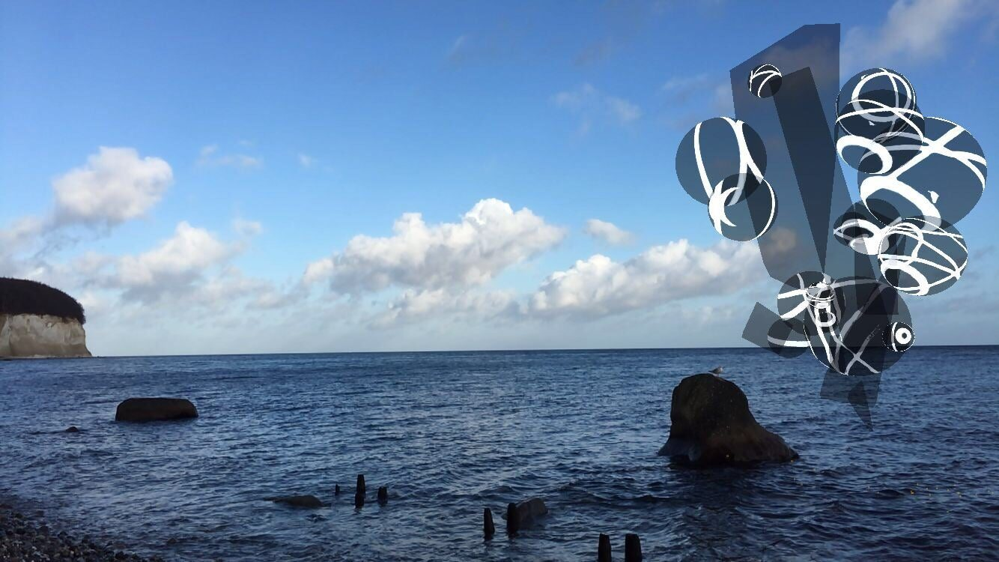
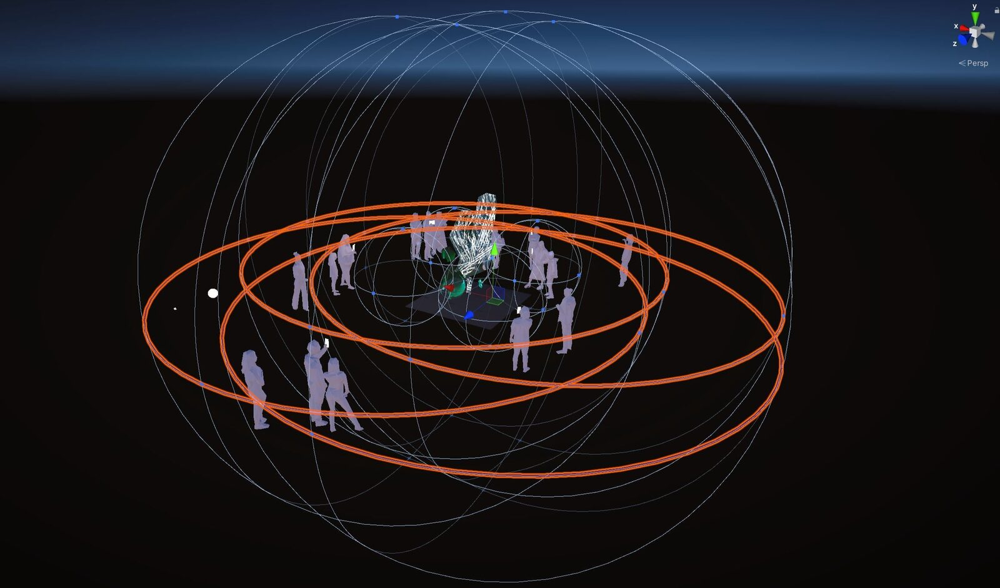

UnStumm - Artificial Liveness
PROJECT DESCRIPTION
UnStumm - Artificial Liveness is run by Claudia Schmitz (time-based media artist) and Nicola L. Hein (sound artist) and focuses on the equal communication of human and machine actors within the framework of audiovisual real-time performances in telematic virtual reality settings.
In UnStumm - Artificial Liveness, the boundaries between human and machine are blurred, forming an artificial system that unfolds a nonartificial liveness and questions the boundaries of human and machine through collaborative creation and real-time performance.
The two project leaders (performing with moving image onto virtual sculpture and guitar/electronics respectively) will perform together with the two AI artists programmed by them. It will realize a virtual reality performance in front of an audience over a duration of 15 minutes. Performer 1 and Performer 2 use machine learning algorithms in Python, Tensor Flow and Max/MSP to create two autonomously acting machine actors (a video artist and a musician), who will perform together with Performer 1 and 2 in an equal human-machine quartet. Both AI video artist*in and AI musician*in will be as collaborative as they are autonomous, making their decisions in relation to the 3 interacting artists as well as their own aesthetic preferences, generating their medium specific live video on moving sculpture or sound.
The intermedial and transhuman conversation between 2 video artists and 2 sound artists will take place on the virtual reality real-time platform already programmed by UnStumm, where humans and machine actors will meet as artistic partners. The machine artists will use technologies of machine learning in order to interact. The software already developed by UnStumm uses elements of the programming environments "Unity" for 3d AR models, "JackTrip"(CCRMA, Stanford University) for audio stream as well as UltraGrid and other platforms for video stream. For streaming the telematic VR/AR performances as virtual video sculptures and audio stream by the audience, a dedicated UnStumm internet platform with associated UnStumm smartphone/tablet app and browser application for computers will be developed. On the UnStumm internet platform, human and AI sound and video artists can perform telematic audio-visual performances with each other and an audience can attend these performances in online VR spaces with their own smartphone or computer. The audience will be able to stream the performances through this internet platform and use their own smartphones as AR glasses to stream the AR performances visually and auditorily. Sound will be audible through headphones and a binaural audio stream.
PROGRAM NOTES
UnStumm - Artificial Liveness is run by Claudia Schmitz (time-based media artist) and Nicola L. Hein (sound artist) and focuses on the equal communication of human and machine actors within the framework of audiovisual real-time performances in telematic virtual reality settings.
In UnStumm - Artificial Liveness, the boundaries between human and machine are blurred, forming an artificial system that unfolds an nonartificial liveness and questions the boundaries of human and machine through collaborative creation and real-time performance.
The two project leaders (performing with moving image onto virtual sculpture and guitar/electronics respectively) will perform together with the two AI artists programmed by them. It will realize a virtual reality performance in front of an audience over a duration of 15 minutes.
The intermedial and transhuman conversation between 2 video artists and 2 sound artists will take place on the virtual reality real-time platform already programmed by UnStumm, where humans and machine actors will meet as artistic partners. The machine artists will use technologies of machine learning in order to interact. The audience will be able to stream the performances through this internet platform and use their own smartphones as AR glasses to stream the AR performances visually and auditorily. Sound will be audible through headphones and a binaural audio stream.
PERFORMANCE REQUIREMENTS
Equipment:
- Use of the own AR/VR platform of Unstumm GbR.
- programmed AI: 1x Sound, 1x LiveMovingImage including interfaces
- Own LivePerformance technology and instruments of the two artists*: (performing with moving image onto virtual sculpture and guitar/electronics respectively)
- Use of the AR application to participate in the AR LivePerformance (for audience).
- The audience uses their own smartphones/tablets including headphones to participate in the performance
Space:
A traditional concert stage, gallery, club, public space, university environment and any other venue is possible for the audiovisual real-time performances in telematic virtual reality settings
On the UnStumm internet platform, human and AI sound and video artists can perform telematic audio-visual performances with each other and an audience can attend these performances in online VR spaces with their own smartphone or computer. The audience will be able to stream the performances through this internet platform anywhere and use their own smartphones as AR glasses to stream the AR performances visually and auditorily - a WLAN connection on their own device is required. Sound will be audible through headphones and a binaural audio stream.
performer(s):
- programmed AI: 1x Sound, 1x LiveMovingImage including interfaces
-a time based media artist performing with live moving image onto virtual sculpture
- a musician: guitar/electronics respectively
feasibility:
UnStumm - Artificial Liveness will be performed on our own AR/VR platform.
Reference of a previous work is the recently shown work at Ars Electronica
“Preliminary Conversations in Augmented Aether” - Ars Electronica in collaboration with CINETic & Augmented Space Agency
MEDIA

▶

Download App and enjoy the performance - Preliminary Conversation in Augmented Aether - in AR


UnStumm App - Preliminary Conversation in Augmented Aether - Stanford University


UnStumm App - Preliminary Conversation in Augmented Aether - Stanford University


UnStumm App - Preliminary Conversation in Augmented Aether - chalk cliffs on ruegen


Outline of how we work and look at our virtual reality app.